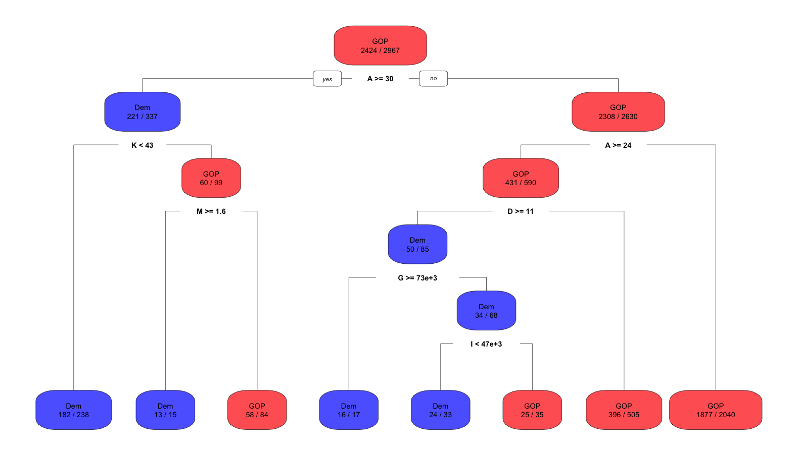
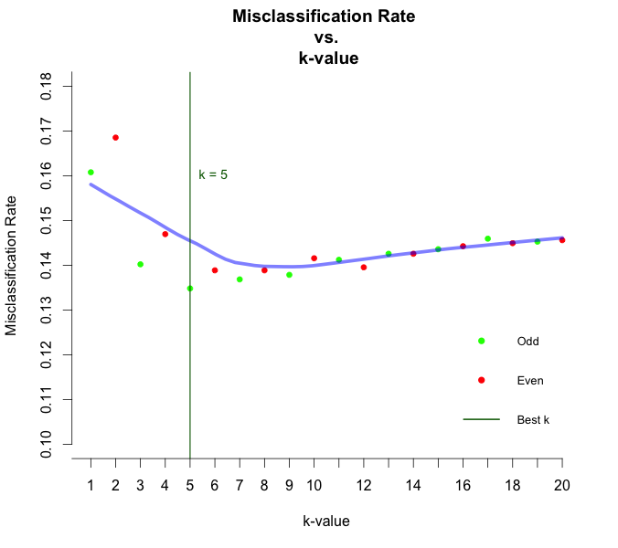
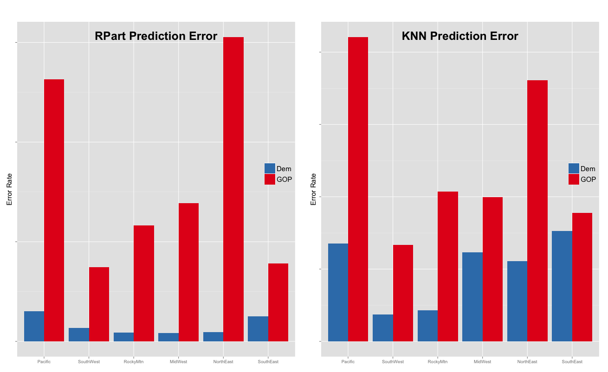
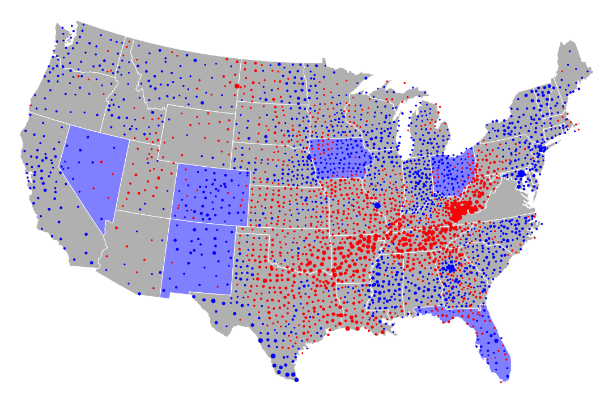
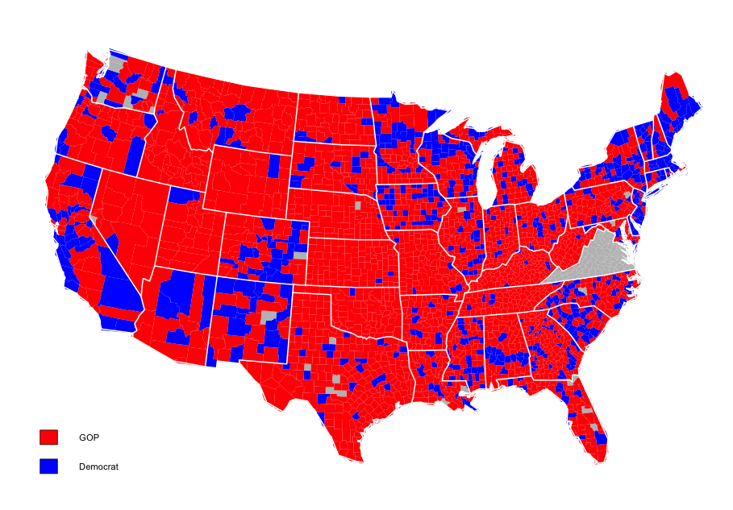

Brooks, Marc
Cheng, Yizhuang Alden
Fenson, Derek
Knopf, Michael
Introduction
The goal of our final project is to use demographic and economic data from the 2010 census, along with 2004 election results for individual U.S. counties, to predict election results for 2012. We chose variables from the census to be predictors for 2012 election results based on their correlation with the winner at the county level for the 2004 election, as well as whether they made sense as predictors. Using the 2004 election results to train these predictors, we obtained predictions for the winner of the 2012 election results via two methods - recursive partitioning and k nearest neighbor. Finally, we compare these predictions with the actual 2012 election results to evaluate the strengths and weaknesses of each of the two methods.
Choice of Predictors
We decided to use absolute correlation as a measure of the relevance between a certain variable and the winner for the 2004 election for each county. In order to compute this correlation, we represented the winner of the 2004 election for each county as an indicator variable (defined to be 1 if Kerry was the winner and 0 if Bush was the winner). At the same time, we wanted to use variables that made logical sense as predictors, and so we decided not to use any of the "margin of error" variables. Out of the remaining variables, a number of them were very similar (essentially the same variable with slight variations in definitions, e.g. income and benefits with social security versus income and benefits with retirement income) and such variables were often highly correlated with each other. Therefore, when there were several nearly identical variables, we chose only one of these in order to ensure sufficient diversity among our predictors. The predictors that we ultimately arrived at through the above process were:
Percent of Individuals who were Never Married
Percent of Individuals who take public transportation to work
Percent of Family Households
Percent of Individuals who Attained a Graduate or Professional Degree
Estimate of Individuals who Earned less than $10,000 in Income and Benefits
Estimate of Individuals in the Educational Services, Health Care, and Social Assistance Industries
Estimate of Individuals with Social Security in Income and Benefits
Estimate of High School (including equivalency) Graduates
Estimate of Employed Individuals in the Civilian Labor Force
Estimate of Individuals in Service occupations
Percent of College or Graduate School Enrollment
Estimate of Individuals born in the U.S.
Estimate of Individuals who speak an Asian or Pacific Islander Language at Home (speak English "Less than Very Well")
Recursive Partitioning

Recursive partition classification tree. Variable names are coded by letter from "Choice of Predicitors". Variables B, C, E, F, H, J, and L were not used in the prediction; either splits were not optimal, or there wasn't enough data points to make splits reasonable. (Created with rpart.plot package in R)
This predictor produced a 14.36% error rate in predicting the 2012 election results. To obtain our results, we used the rpart function along with the prediction function. The rpart function recursively splits the counties into groups based on predictor variables. However, if a group already contains too few data points, the function will decide not to split it farther. This explains why some variables were not use in the partition. See "Evaluation of Prediction Models" below for more details.
K Nearest Neighbors

The misclassification rates for k = 1,...,20. Odd values do better until the trend reverses at k = 10.
This predictor produced a 13.48% error rate in predicting the 2012 election results. The method used was to first normalize the variables used as predictors with respect to population for each county, then use the knn.cv function, which does not use a county as one of its own neighbors. See "Evaluation of Prediction Models" below for more details.
Error Rates by Region

Regional error rates are fairly consistent between both methods of prediction. The Pacific and NorthEast regions erred heavily in the direction of the GOP, which aligns with the change in vote from Republican to Democrat in the 2012 election. (Created with ggplot2 package in R)
Evaluation of Prediction Models
We compared the misclassification rates for the two prediction models. We defined the error rate as the proportion of county predictions for election 2012 results for counties that turned out to be wrong. The error rate for the rpart prediction method was approximately 14.36% whereas the error rate for the knn prediction method was 13.48% for the particular seed value we chose. In addition, we distinguished between errors in favor of GOP (i.e. where the method predicted a GOP win for the county in 2012 when in fact, the county was won by the Democratic candidate in 2012) and errors in favor Democrats (i.e. where the method predicted a Democratic win in the county in 2012 when in fact, the county was won by the GOP candidate in 2012).
We are also interested in comparing the places where these two methods did poorly
and where they did well.
First, we investigated whether the performance of our prediction methods varied by geography. In order to do so, we divided the counties into subsets determined by geographical regions. Then, we created barplots indicating the error rates in favor of GOP and the error rates in favor of Democrats for each of these regions. The error rates were highest in the NorthEast and Pacific regions for the rpart predictions. For the knn predictions, errors were twice as high in the Pacific as they were in each of the other regions.
Next, we examined the accuracy of our prediction methods for counties with various unemployment rates. We divided the counties by the quartile of their unemployment rates (i.e., the 1st quartile contained the counties with the lowest unemployment rates and the counties in the 4th quartile had the highest unemployment rates). For the rpart prediction method, error rates for the 2nd, 3rd and 4th quartiles were roughly comparable and significantly higher than the error rate in the 1st quartile. On the other hand, error rates for the knn method displayed a constant increase in error as unemployment increased. We have omitted the unemployment barplot to avoid an overwhelming number of images in this report, but the plot can be produced by running the .R script.
A very clear pattern in the error rates for both predictors is that there are far more wrong predictions in favor of GOP relative to the number of incorrect predictions in favor of Democrats. This trend seems quite reasonable for the following reason:
Both prediction methods are more likely to do better if the 2012 election results are fairly similar to the 2004 election results. However, this was not the case in general, as there was a substantial general vote shift towards the democrats. Hence, it makes sense that there are a fair few cases where rpart or knn predicted a GOP win in a county (based on the relationship between 2004 results and 2010 census data), but in fact, the underlying voter sentiment in the county had changed significantly since 2004, and so Democrats won the county instead.
Geographic Analysis

This plot represents the nominal change in percentage of GOP vote shares from 2004 to 2012. The size of the points represent the magnitude of the change, and color represents the direction of the change - blue for liberal shift, red for conservative shift. The blue filled states changed party - from democrat to republican (in terms of the electoral college) - from 2004 to 2012. All other states held constant in this respect. We jittered our data points to avoid too much over plotting. (Created with ggplot2 package in R)

Predictions of the 2012 election based on the recursive partitioning method. Regions for which voting data was missing are colored grey.